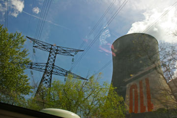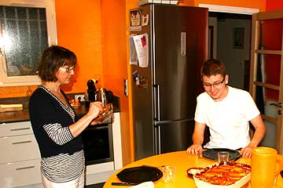
Hele dagen kørte vi langs med Rhonen hvis vand strømmede rigeligt og forårsfuldt afsted. Grønne snirklede fuldt opladet rundt på de små veje mellem nyudsprungne træer og blomstrende grøftekanter. Efterhånden blev vinstokkene afløst af frugttræer og bistader. Æbletræer, blomme- og kirsebærtræer stod i fuldt flor her i Frankrigs skønne frugthaver som duftede sødt af sommer. Vi kom forbi et par opdæmninger, over flere broer og så to atomkraftværker. Frankrig får 70% af sin strøm fra atomspaltning. Strømmen er god nok og Grønne kører på det stikkontakterne byder på. På de sidste procenter nærmede vi os Pascales hus nær Lyon. Hendes søn så os på nettet, og gik ud på vejen og hentede os. Middagen var en lokal specialitet som smagte dejligt. Vi fik en seng at ligge i og Grønne fik noget ordentlig strøm, som var meget bedre end de sølle 5 ampere de har på campingpladserne. Pascale fortalte at hun som skolepige var på besøg på atomkraftværket nær Lyon. Alle var stolte og glade over Frankrigs intelligente energiproduktion. Nu er de ikke så sikre mere. "Ingen fortæller om den virkelige risiko" sagde hun. På taget af deres hus har hun og hendes mand intalleret solceller.
Nina og Hjalte
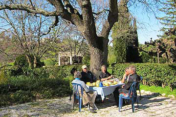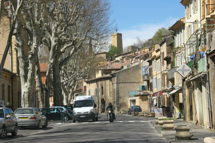
Vi vågnede op med udsigt til husets vinmarker og de bjerge som maleren Cezanne yndede at male. Lang morgenmad i haven - det var næsten ikke til at rive sig løs fra det gode selskab og det romantiske sted. Men vi måtte videre. Vi kørte opad med et råddent æg under speederen, som Torben havde lært os, for at spare på strømmen. For bjergvejen steg på de første kilometer og det koster strøm. Grønne var helt vild med at trille ned ad bakkerne. Hjalte som kørte, troede stadig vi var til rally, så nu var det min tur til at træde bremsebenet gennem bunden imens jeg hagede mig fast i døren. Til siderne lå vinmarker og vingårde kilometer efter kilometer. I byen Dieulafit slog vi lejr på campingpladsen hvor Grønne fik sikringerne til at klikke på fire strømstandere, inden vi fik skruet nok ned.
Nina
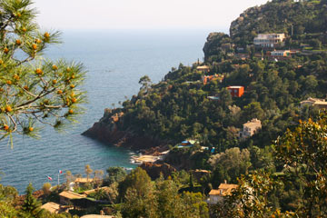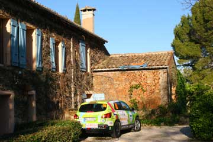
I strålende sol kørte vi vestpå langs Middelhavskysten med udsigt til villaer og palmer, klipper og strande - og det strålende blå hav. Frokost i en lille havn hvor havnefogeden gav os et frokost-ladestik til Grønne. En time efter fortsatte vi ad kystvejen som slyngede sig ud og ind, og op og ned indtil vi kørte ind i landet til Mas des Gravieres. Jan-Olaf, som vi havde kørt Rally sammen med, havde inviteret os til at overnatte på hans vingård. Et smukkere sted kan man dårligt forestille sig. Desværre var han og hans kæreste der ikke selv, men Doris som passede huset tog flot imod os med vin og en dejlig middag. En hyggelig aften blev tilbragt sammen med et par interessante gæster, som også var på besøg.
Nina
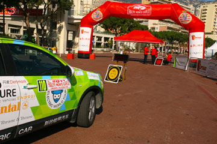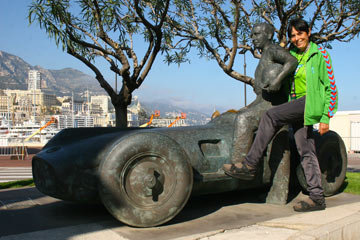
Om morgenen kørte alle bilerne gennem en slalombane. De store biler kom noget langsommere igennem banen end de mindre, så Grønne var ikke blandt de hurtigste, selv om Hjalte drejede på rattet som en rasende. Bagefter måtte vi tage afsked med Torben og Merete, som vi håber at se igen.
Deltagerne fra det lange rally og det korte rally for elektriske biler samledes til en stor frokost med prisuddeling i Monacos fornemme sportsklub. Vinderne af de to løb fik nogle store trofæer og blev fotograferede. Jeg havde kjole på, og Hjalte bar slips. På bordene stod vin, men da alle skulle køre hjem, blev det ikke rigtig til nogen fest. Tilbage på hotel Fairmont pakkede vi bilen med vores gamle campingudstyr og alt det andet skrammel. På det ekstravagante hotel følte vi os som besøgende fra en fremmed planet. Først på det lille hyggelige hotel Aramis i Nice blev vi os selv igen. Men det havde været en kæmpe sjov oplevelse at være med i rallyet, og får vi muligheden vil vi gøre det igen!
Nina
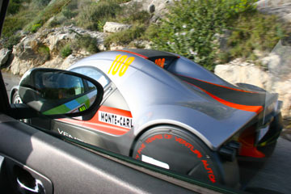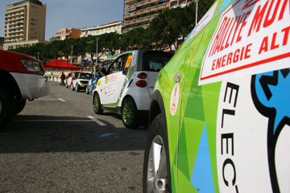
Jeg Grønne var klædt på så jeg næsten lignede en racerbil. Det var sjovt at overhale dem foran selv om det kostede strøm. Det hele var som en dejlig drøm, især på prøverne hvor jeg fik lov at køre hurtigt. Grantræerne susede forbi på den smalle slyngede vej med klippe til den ene side og frit fald til den anden side. Jeg passede på ikke at punktere på de skarpe sten, men kunne næsten ikke holde op med at køre hurtigt. Jeg opdagede slet ikke at prøven var gjort kortere og var lige ved at miste tålmodigheden da der pludselig lå en skolevogn og spærrede foran mig. Bagefter var det bare at trille ned til Monaco i afslappet tempo.
Dernede begyndte bilerne fra det lange tredages Rally for alternativ-energi-biler at ankomme. Mest hybrider, men også biler på gas eller biodiesel. Fire elektriske Tesla sportsvogne var også med som de eneste helt elektriske biler. Det var herligt at være i selskab med så mange forskellige biler, der var over hundrede, og vi stod og snakkede sammen hele natten. Det lange løb var også gået godt, selvom et bjergskred forsinkede løbet, men heldigvis var ingen biler kommet til skade.
Grønne.
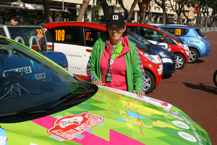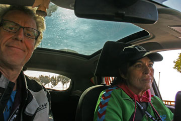
Vores mål var at gennemføre. Lige så snart vi var startet fik jeg styr på nerverne. Starten gik strygende og, snart var vi oppe hvor hårnålesvingene begyndte. Vores strategi var ikke at spare på strømmen men at komme forrest i feltet så vi ikke risikerede at blive forsinket af langsomme biler. Hjalte og jeg samarbejdede godt, Hjalte kontrollerede vejen og tiden, og jeg styrede Grønne. I den klare morgensol susede vi rundt i svingene. Skyerne lå under os, det var som at flyve. Prøven hvor vi skulle køre hurtigt på en slynget vej gik også godt, bortset fra at vi på et tidspunkt satte farten ned fordi vi troede at vi kørte for stærkt.
Midt på dagen havde vi syv timers ladepause i Monaco. Torben tog os med på en dejlig tur rundt i den gamle by, anlagt højt oppe på en klippe.
Da rallyet startede igen sent på eftermiddagen var vi stadig i hopla. På prøven hvor vi skulle gennemkøre en vanskelig strækning på tid, nød jeg at race af sted over stok og sten Kun risikoen for at møde modgående holdt os fra at køre endnu hurtigere. Vi var rigtig godt tilfredse med os selv og Grønne da vi kom tilbage til Monaco. Vi havde haft det sjovt og fuldført turen helt uden uheld. Resultatet får vi at vide i morgen efter sidste prøve.
Nina
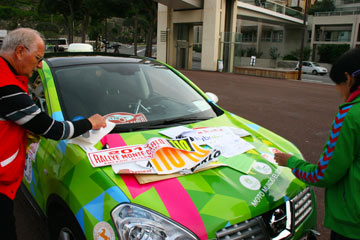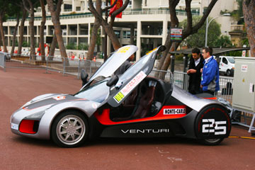
Ved Grimaldi Forum fik vi lov at prøvekøre den nye Nissan elbil, “Leaf ”som er kåret som årets bil i 2011. Bilen var gnistrende elegant og let at køre. Der var overnatning på luxushotel i iMonaco for elbil-rallyets deltagere. Vi skyndte os derfor at hente vores ting i Nice og checkede ind på det fornemme Hotel Fairmont hvor vi læssede alt vores skrammel af. Grønne fik verdens dyreste bilvask og blev kørt ned på den lukkede parkeringsplads havnen, hvor vi mødte Torben. Vi fik et læs klistermærker som Grønne blev pyntet med, ligesom de andre12 biler der skal deltage i rallyet i morgen.
Favoritterne er sidste års vinder fra Norge i en Citroen C Zero, og et team fra Monaco i en Venturi Volage, en super flot racerbil. Alle deltagerne er flinke folk, kun Venturi teamet holder sig for sig selv, de har vist et problem med bilen. Bilerne fik hvert sit ladestik, og vi gik ud og spiste sammen med Torben.
Nina
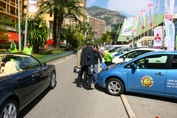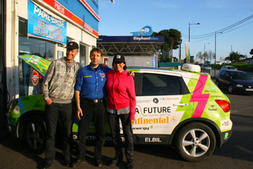
Fra morgenstunden tog vi til Monaco for at gennemkøre anden del af Rally-ruten uden reservehjul. Vi bliver stadig mere forsigtige på den halsbrækkende del. I Monaco har alle de offentlige parkeringskældre ladestik, så Grønne blev sat til opladning. Imens gik vi til Grimaldi forum hvor der var un fin udstilling af elbiler.Hjalte var især interesseret i de nyudviklede hjul fra Michelin, med elektrisk motor, affjedring og bremser inden i alle fire hjul. Senere kørte vi til Antibes hvor der skulle være et nyt Conti dæk til os. Chefen og folkene der var vældig flinke Men ak! dækket som var sendt til os fra lageret havde en forkert dimension. Grønne måtte køre vider på reservehjulet, og vi var nødt til at lade i en time i lystbådehavnen før vi kunne trille hjem, til Hotel Aramis i Nice. Jeg blev køresyg af at se den video hjalte optog gennem forruden i morges!
Nina
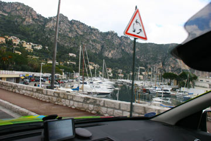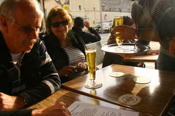
Hjalte og Nina brugte formiddagen på at telefonere. De har lovet mig at jeg snart får et nyt dæk i stedet for det som blev ødelagt i går. Det småregnede da Hjalte og Nina forsigtigt gennemkørte den første del af Rallyruten uden reservehjul. Imens hyggede de sig med at småskændes i kabinen.
Sent på eftermiddagen kom Torben og Merete forbi med de navneskilte som skal sidde på siden af mig. Uden deres hjælp og venskab tror jeg ikke at jeg kunne køre det rally. De gik på cafe sammen og nød et glas vin og en øl i dagens sidste sol.
Hilsen fra Grønne.
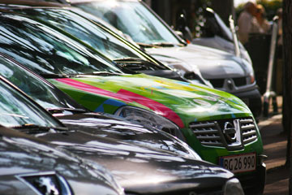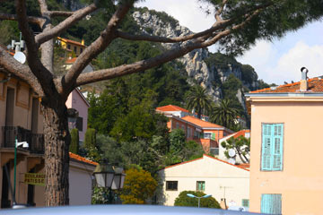
Idag har vi trænet den lange tidsprøve som alle 120 biler i løbet skal igennem. Jeg sad med stopuret og havde idealtiden skrevet op. "Hurtigere i svingene" sagde jeg til Nina, mens jeg med bankende hjerte så afgrunden suse forbi. Nina var næsten igennem hele prøven og gav ekstra gas. En skarp sten kom i vejen. Vi hørte begge lyden af luft da hjulet eksploderede. I La Turbie på vejen hjem til Nice slappede vi af med en kop kaffe. Automobile Club de Monaco har lagt deltagerlisten ud på nettet og vi er oppe imod hard-core rallykørere. Vores mål er at fuldføre rallyet. Og det vigtigste er at komme vel hjem.
Hjalte